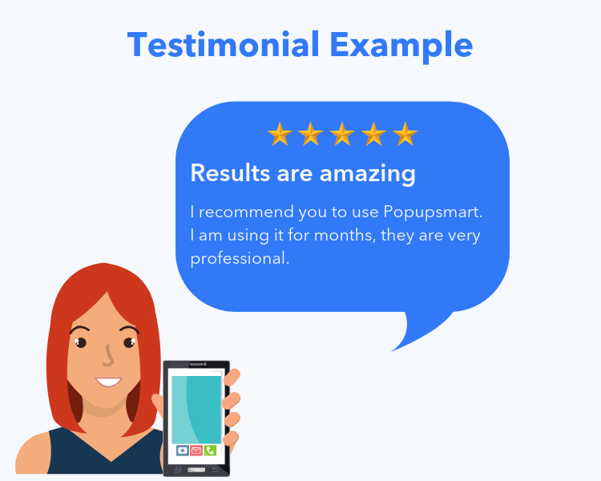

Timeline
This is a timeline created using HTM and CSS. It tracks my work experience and it uses animations as well so my experience pops up on my timeline. The background changes as well.

Testimonial
This testimonial page was created using Owl-Carousel. It is a slider so that it doesn't look cluttered with information and you can read one at a time. I have used information provided to me from my peers.
Testimonial
This testimonial page was created using Owl-Carousel. It is a slider so that it doesn't look cluttered with information and you can read one at a time. I have used information provided to me from my peers.